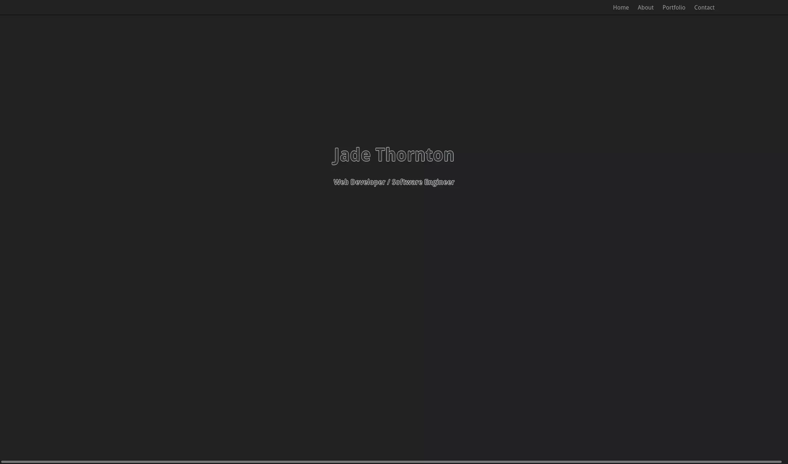
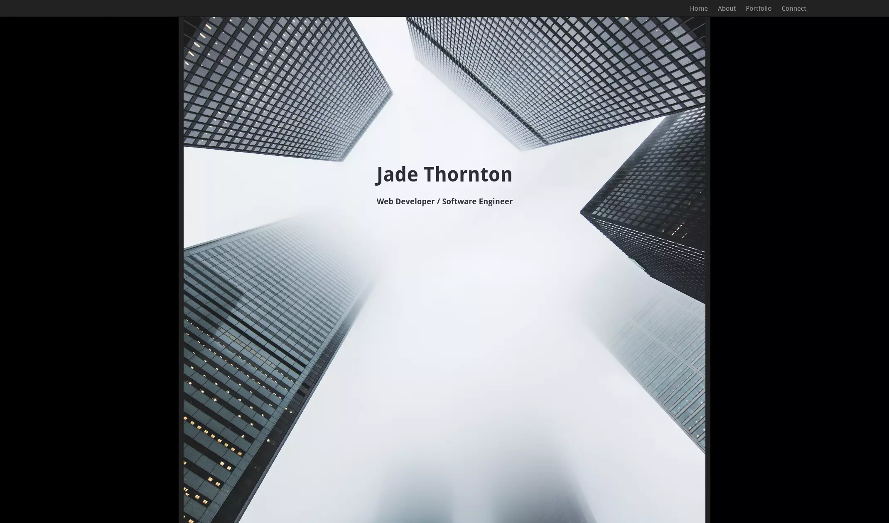
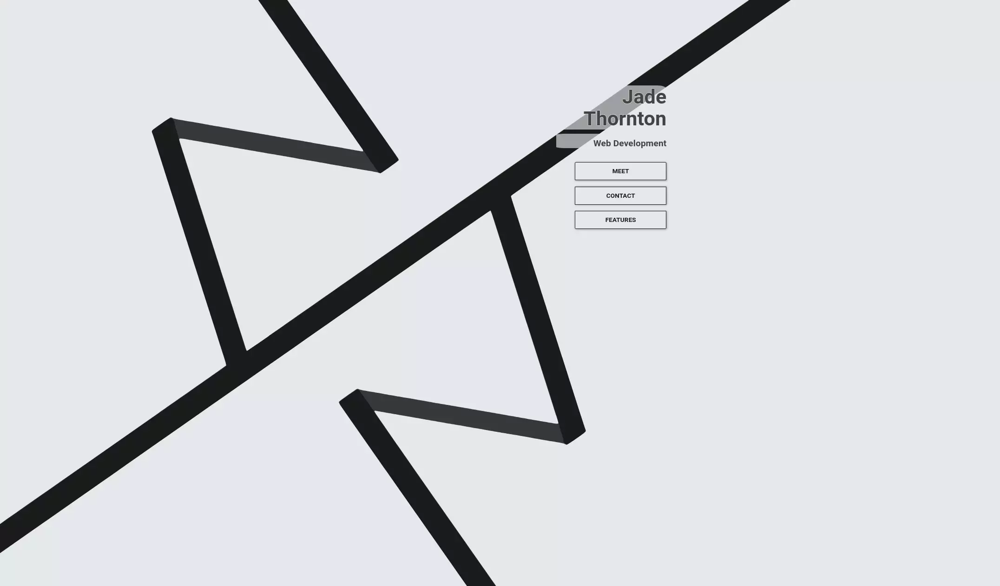
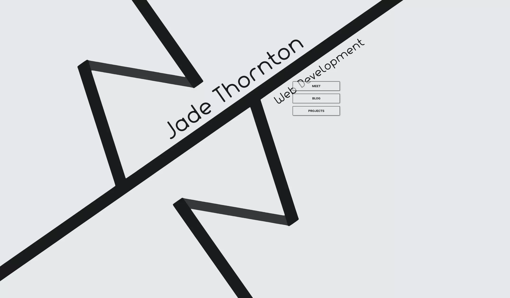
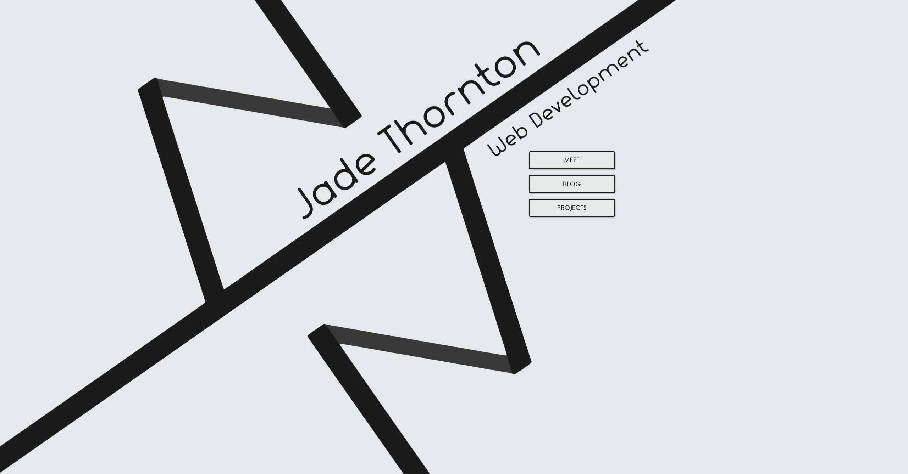
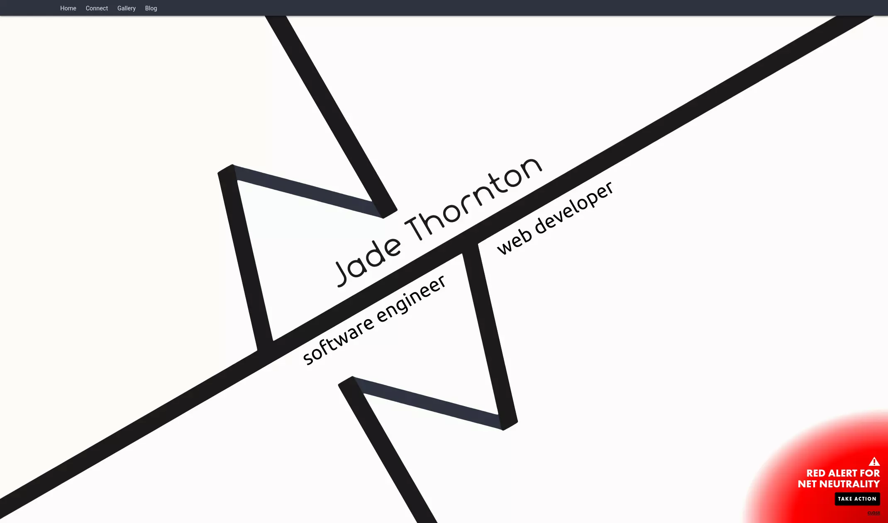
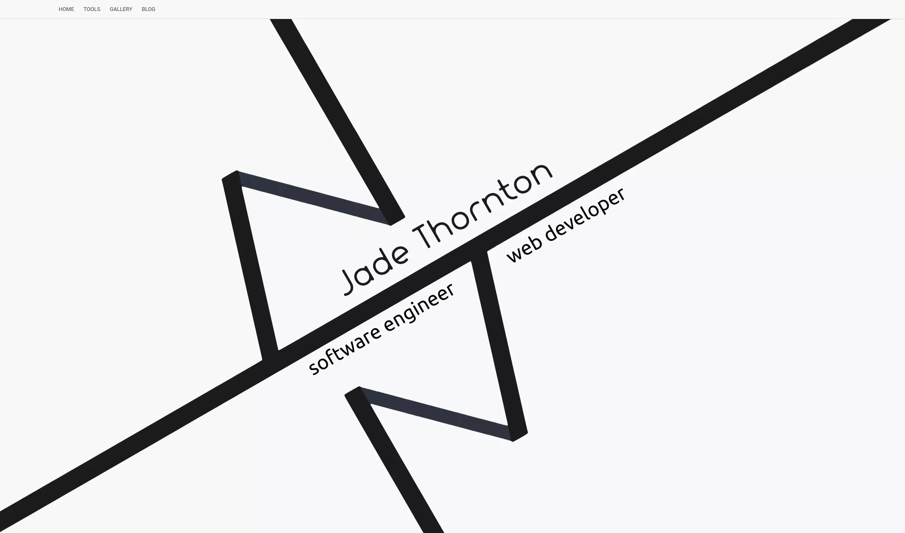
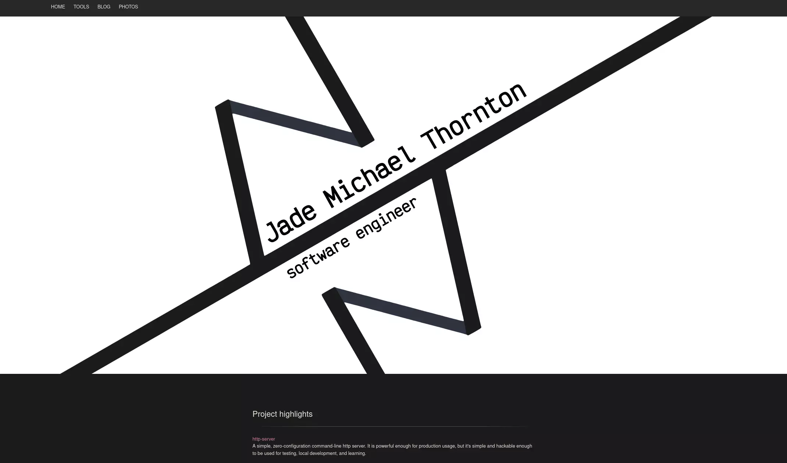
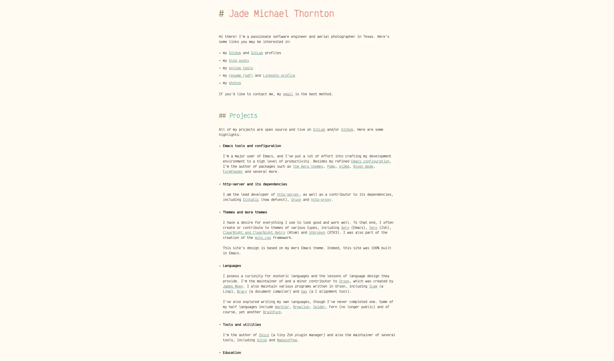

Museum of this website
My website has undergone many massive changes, including multiple complete rewrites spanning over a thousand git commits. Here, I pay respect to my journey and mark the path into the future, holding hope that this museum will grow to ever greater heights.
Please note that these are only snapshots of the past; links are not guaranteed to work and, for the most part, only the home page is preserved. Please, no flash photography.
Initial public commit explore →
This is the first git commit, and the first version to be open source. This version was extremely basic, but would serve as the base for a flurry of development as I aimed for my first real software development job. Prior to this release, my website was hosted in Wordpress from 2012.
This version is built with Bootstrap CSS and jQuery. The font is Droid Sans.
v0.1.0-alpha explore →
Only a day after the initial public release, I tagged my first alpha release. 40 commits had passed by, including Creative Commons photos, a favicon, more pages and supporting documents like a Readme.
Built with Bootstrap and jQuery. The font is Droid Sans.
v0.6.4 explore →
The first full release. No alpha or beta disclaimer, this was the first version of the website to go live at jmthornton.net. No more single page with static images, the site flourished with sectioned content. I took my first step into blogging (the article is no longer hosted, it was bad).
Built with Bootstrap and jQuery. The font is Roboto.
v0.7.1, aka v1 explore →
I never actually tagged a v1, but this is spiritually it. This version is the last before we make it to v2. It's not a far cry from v0.6.4, but the soon-to-be familiar logo has taken shape.
Fun fact, this logo, which you can still see in my favicon, was inspired by the shapes of some binder clips I was playing with while bored at work. It's not a killer origin story, but such is life.
Built with Bootstrap and jQuery. The font is Roboto.
v2 explore →
As much as it looks the same as v0.7.1... It is. I honestly don't remember what pushed it from v0 to v2.
Built with Bootstrap, Bootswatch and jQuery. The font is Rounded.
v3 explore →
The first truly ground-up rewrite, using a new framework, new technologies and a return to the single-page portfolio look. All content above the fold is obliterated by a carefully crafted splash image (which is an SVG, might I add). A golden age for the site.
Built with Mini.css, Sass, Flow and custom Node tooling. The font is Segoe UI.
v4 explore →
While not a large departure from v3, this version added two web tools, tweaked design and put a larger focus on me.
Built with Mini.css, Sass, Flow and custom Node tooling. The font is Segoe UI.
v5 explore →
The most obvious change is a move to a dark theme, one which I would struggle to keep both interesting and accessible over the course of the series. This version also includes a rewrite to remove the Mini.css framework.
Built with Sass, custom Node tooling. The font is Helvetica Neue.
v6
That brings us to the current version, you're looking at v6 right now! This version is the most significant rewrite yet, opting to provide a lightning fast, simple, refreshing introduction to me and my software life.